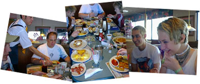
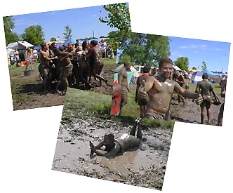
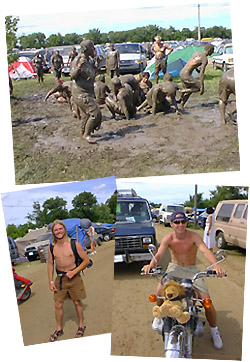
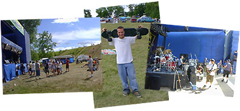
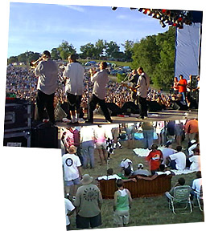
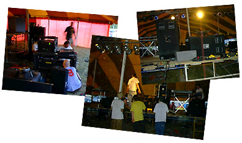
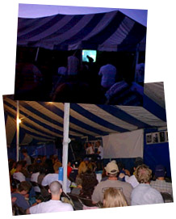
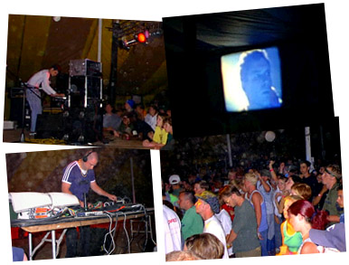

|
 |
 |
| Cornerstone: Welcome!
Day 4: Hustle!
It's more than a music party -- Tucked behind the underground tent are Cornerstone's ArtRageous and Imaginarium exhibits. Authors, painters, and others of a creative bent can enjoy conferences, discussion, and great coffee. The midnight film festival was cool, too...
So much music, so little time... Sob! Here's a peek at some of the cool stuff I stumbled across over the course of the festival. Some oldies and some fresh stuff -- no matter what the genre, it's hot stuff.
Follow the adventures of Squeaky the Duck on his adventures at the fest. From his near-death experience at the hands of Kevin131 to a DC Talk sighting, he's been almost everywhere.
Well, T-shirts, too. Cornerstone is a great place to find a variety of wacky hairstyles, and most of the owners are good natured sorts who're quite willing to offer their coifs for a good cause -- this page, for one!
What do you get when you put a bunch of music-obsessed usenet junkies in one place? Vibrating hairrushes. That's what. The fourth annual RMC Cornerstone picnic is here, captured in bits and bytes for all of posterity...
Whether it's beating the heat, finding munchies, or selecting that perfect camping site, there's someone who's been through it and has some words of wisdom to offer. Recorded here for posterity are essential Cornerstone survival skills. |

Saturday! As Cornerstone counted down its final forty-eight hours, we kicked off the day with a trip to Perkin's. Lots of yummies, lots of taling. I clicked off almost forty photos of the place -- a sure sign that I was shutter-happy. Fortunately, my camera was digital, and film costs were a thing of the past... Out waiter was more than patient, considering the Cornerstone-inspired wackness that we were all carrying around. After we'd cleared the table of french toast, eggs, sausage, onion rings, pancakes, milk shakes, OJ, bacon, and every other imaginable brunch item, we headed off to the fest grounds. En route, Jason and I chatted briefly about what we'd seen over the last few days. The day promised to be eventful, with the OC Supertones show early, and a rave in the dance tent after nightfall. Blade Runner would be showing the Imaginarium, too... More discussion yielded the idea of teaming up with the camera and camcorder to bop around for the morning and afternoon. Soon, we'd put together a plan to take the Tour El Grande of Cornerstone, and capture it for future generations.  As it turned out, it didn't take us long to find film-worthy events. Near the entrance to the cornerstone farm, a gang of sun-weary campers had discovered a mudpuddle and applied hoses, water bottles, and more to turn it into a full-fledged mudpit. There are few sights as interesting as rounding a corner to find a herd of shouting, lauging, mud coated fest-goers rolling around in the sludge... How did it happen? "I dunno," said one of the guys there. "I just walked by and saw everybody rolling around and said, 'Hey! Cool!' And took off my shirt and jumped in." Gotta love it. We got some photos and talked to a few of the mud-lovers, got a few sloppy pats on the back, and started the long hike to main stage. En route, Jason and I ended up bumping into a number of interesting folks. (Big shock, eh?) The guy on the left hitch-hiked all the way to Cornerstone from Indiana to make it, while Mr. Motorcycle drove to the fest on his hog. Jason and I inquired about the stuffed lion tied to the front of his bike -- turns out, his girlfriend gave it to him so he'd haave something to remember her by while he was at Cornerstone. Aaaawwwwwww. When we got there, it was sound check and setup time for the OC Supertones, one of the first ska groups to break into mainstream Christian music scene. The huge mainstage pit was almost empty, with the show set to start in a few hours. Still, there were a few dozen people milling around, biking up and down the big hill, and playing frisbee. We hung around backstage for a bit, then talked to one of the guys traversing the hill. What caught our attention was his skateboard -- an off road model with fat monster-truck tires and a snowboard-sized surface.  More photos were taken; Jason and I hung out with various people, listened to the Supertones doing their sound checks, and tried sledding down the main stage hill on scraps of cardboard -- a popular passtime with the crowd. After a while we hiked back to the car for refreshments. Seven O'clock rolled around soon, though, and we found ourselves back at the Main Stage as the Supertones started their set. Things were bouncing in no time, with thousands of people in the mainstage pit skanking aroud while those on the hill soaked up the music from their lawn chairs. Jason and I made our way through and around the crowd, and found ourselves behind the main stage. Woohoo! Some convincing got me in for some close-ups of the band before we slogged our way back up the hill to watch the rest of the show. Rolls of TP, beachballs, and other assorted objects were flying through the air, and we spotted a trio of guys going the extra mile to get comfortable on the hill. They had carried a battered old couch all the way to mainstage and plopped it down in the middle of the crowd, then sacked out to watch. Very enterprising, with bonus points for style! An hour or so later as the concert wound down we made tracks for the dance tent, where the setup work for the late night rave was underway. The only problem I faced was deciding how to spend the evening -- thrashing at the rave, or watching Blade Runner at the Imaginarium film fest. Jason and I watched the setup, chatted briefly with a few of the guys from the groups that would be playing, and then I headed off to check out the Blade Runner Tent.  Much to my delight, there was already a heated discussion raging about the works of Philip K. Dick, the author whose book Blade Runner was based on. The open-ended discussion of postmodernism, literature, and Do Androids Dream Of Electric Sheep was tres interesting. I stuck around for most of it; before it finished up, Jason and I dashed to get some food before the start of the big rave. By the time I got back to the dance tent, it was already filling up. Joy Electric and Cloud2Ground kicked the show off, and the atmosphere was great with a few hundred people thrashing around. After an hour it bounced into the mixes that Prophecy of PANIC's Brian Scroggins had been putting together earlier in the week; it was easily the high point of the night. Of course, torn between Blade Runner and the rave, I made regular dashes back to the Imaginarium tent to catch great scenes from the movie; fresh movie popcorn and discussions between reels made it even sweeter as the night wore on. When we finally headed back, exhausted in the wee hours of the morning, DJ Scott Blackwell was still going strong mixing up fresh music as the rave continued. Later, we heard that it lasted until four in the morning -- a full seven hours. Woohoo!  |
|
|
|